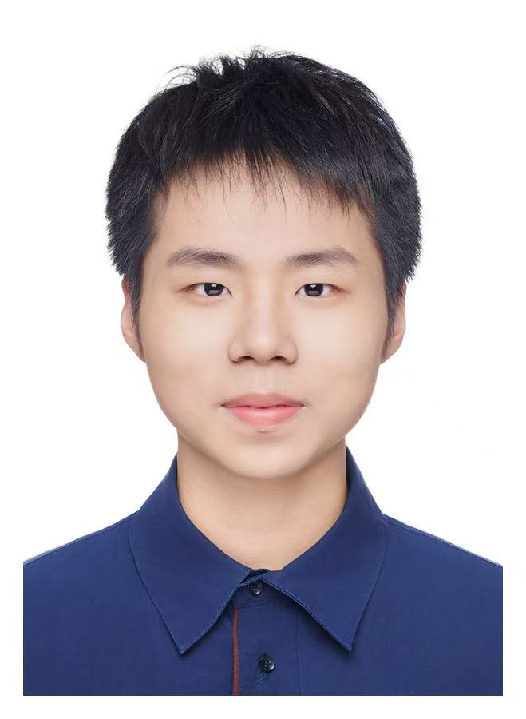

智能体系统
面向任务协作、资源交易和状态管理，构建可交互、可演化的 Agent 原型系统。
Tongji University · Embodied AI · Agent Systems
同济大学启迪书院本科生，同济大学具身感知与智能计算实验室成员。 我关注深度学习、通用人工智能与智能体系统，正在通过项目实践把模型能力落到真实任务与交互系统中。

About
我具备较扎实的 C++ 与 Python 基础，长期关注 AI Agent、世界模型、自动驾驶风险决策、 机器人视觉识别与多智能体协作机制。我的项目经历覆盖算法设计、数据处理、模型训练、前端原型、 交互系统搭建与团队协作。
当前，我希望继续在具身智能和智能体系统方向积累研究与工程经验，探索模型如何理解场景、 做出决策，并在复杂任务中形成稳定的价值循环。
Focus
面向任务协作、资源交易和状态管理，构建可交互、可演化的 Agent 原型系统。
关注自动驾驶失效接管场景中的风险预测、环境理解与最小风险策略生成。
结合视觉识别与大模型 Agent，让机器人从自然语言指令走向空间任务执行。
Projects
项目负责人 · 5 人团队
面向自动驾驶失效且驾驶员不适合接管的场景，构建世界模型辅助的最小风险决策系统。 我负责完整舱外预测体系设计与开发，包括摄像头数据结构化、大模型辅助场景描述、skill 设计与训练、世界模型训练和评估。
GitHub 项目地址独立负责人
创建 Token Agent MVP 原型系统，面向虚拟智能体交易与任务协作场景，整合 Web 前端交互、 像素风可视化、Token 经济机制与智能体状态管理，实现智能体创建、租赁、购买、工作收益与 Token 流转等基础功能。
在线项目展示视觉模块负责人 · 10 人团队
面向机器人空间搭建任务，基于大模型 Agent 与视觉识别技术，接收自然语言指令并完成建筑搭建动作。 我负责机器人视觉识别算法开发、数据采集、模型训练与对齐、后训练优化，并围绕幻觉与决策偏差等 Bad Case 持续迭代。
Skills